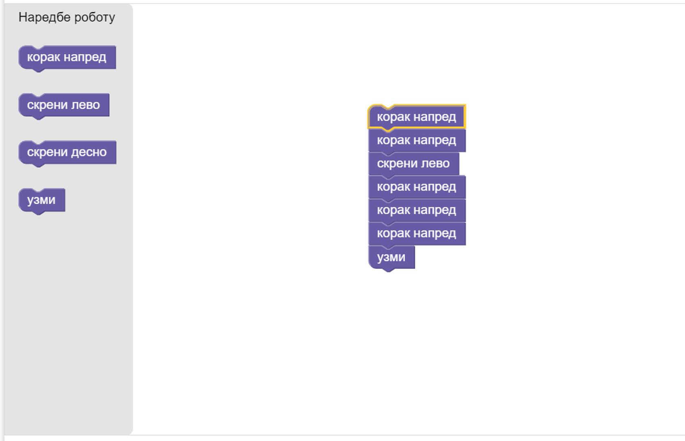

О Карелу¶

Зашто баш Карел?
Робота Карела осмислио је још пре педесетак година Рич Патис, постдипломац Универзитета Станфорд. Он је закључио да би студенти много лакше научили да програмирају ако би радили у неком једноставном окружењу, без много сложених детаља са којима ће се касније сусрести у неким програмским језицима.
Рич је осмислио једноставног робота и дао му име Карел, по чешком драмском писцу Карелу Чапеку, који је први увео реч робот.
Годинама уназад, Карел се користи у уводним курсевима информатике широм света и милиони студената и ученика уз њега су направили своје прве програмерске кораке.
Карел је мали робот који живи у лавиринту. Његове омиљене играчке су лоптице. По цео дан лута кроз лавиринт, тражи их, сакупља и убацује у рупе.
У наредним задацима ћеш, у ствари, усмеравати Карела. Он разуме мали, али сасвим довољан број наредби за оно што треба да уради.
Погледај следећи пример.
Пример¶
Ово је лавиринт у којем живи Карел! Карел, лоптице и рупе могу да се нађу на различитим пољима. Свако поље означено је бројем колоне (доле) и бројем реда (лево). Карел се налази тренутно на пољу (4, 1).
Испод лавиринта налази се простор који служи да програмираш Карела. Са леве стране овог прозора налазе се блокови (касније
ће бити смештени у различите групе). Превуци блок на коме пише корак напред у простор са десне стране. Притисни
дугме Покрени програм и посматрај шта се дешава у лавиринту.
Превуци сада још један блок корак напред и један блок скрени лево. Покрени поново програм. Шта се десило?
Иако нису повезани блокови, робот је покушао да изврши све три наредбе. Кренуо је од блока који је ближи горњој ивици.
Ако су горња два блока била корак напред онда је прво направио два корака, па скренуо у леву страну. Ако је скрени лево било
изнад (пре) неког корака, окренуо се у леву страну. Пошто је наишао на зид, није успео да настави даље.
Црним линијама у лавиринту су означени зидови. Кроз њих Карел, наравно, не може да прође.
Можеш да закључиш да није свеједно којим се редом извршавају кораци. Блокови које користиш направљени су тако да могу лепо да се наслоне један на други. Када довољно приближиш један другоме, чуће се благо „шкљоц“, што значи да су повезани.

Карел за кретање користи три наредбе: корак напред, скрени лево и скрени десно.
скрени лево значи да ће се окренути у леву страну за 90 степени. Исто тако, скрени десно значи да ће се окренути
у десну страну за 90 степени.
Врати се на претходни пример и састави блокове тако да Карел стигне до поља на ком се налази лоптица.
Поред дугмета Покрени програм налази се дугме Врати на почетак које омогућава да се Карел врати на почетну позицију, а да се
не покрене поново. Ово дугме може добро да ти послужи када желиш мало боље да размислиш како да решиш задатак.
Да би претходни задатак био успешно завршен, потребно је још и да Карел узме лоптицу. За то се користи блок узми. Додај и њега
као последњи блок!

Покушај да поређаш блокове у другачијем редоследу. На пример, после другог корака стави блок узми. Шта се десило?

Када покренеш програм, можеш да испратиш корак по корак како се извршава (Карел се помера, а уједно је означен и блок који то омогућава). Када се изврши и последњи корак, добићеш одговор да ли је твоје решење исправно.
Поруке су врло јасне:
„Тачно“, ако је задатак успешно урађен,
„Нетачно“, ако робот није на одговарајућем пољу или није сакупио или оставио у рупу довољан број лоптица,
„Робот је ударио у зид“, ако Карел приликом кретања наиђе на црну линију којом је представљен зид,
„Не постоји лоптица на пољу“, ако Карел покуша да узме лоптицу на пољу на ком не постоји.

- (5, 3)
- Нетачно
- (1, 3)
- Тачно!
- (5, 4)
- Нетачно
- (4, 5)
- Нетачно
Q-29: На ком се пољу налази лоптица?
Пошто је окружење за програмирање врло једноставно, можеш да се концентришеш на решавање проблема од самог почетка. Решавање проблема је суштина програмирања. Карел подстиче машту и креативност и верујемо да ће ти бити занимљиво да радиш у овом окружењу.
Сада знаш како изгледа окружење и како се програмира Карел, покушај самостално да решиш наредне примере и задатке!
Уз скоро сваки пример или задатак дајемо „Предлог решења”. Назвали смо га тако зато што скоро сваки од проблема можеш да решиш на више начина. Може да се деси да твоје решење буде другачије од нашег предлога, а да опет буде исправно. Свакако, уколико јасно препоручимо блокове које треба да користиш, важно је да испоштујеш предлог како би добро увежбао њихову примену!
За претходни задатак,
Предлог решења
{kind=link}